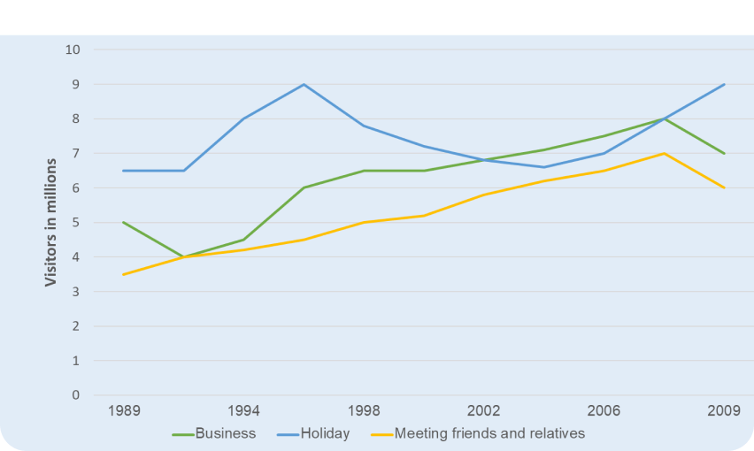

📌 Đề bài & Phân tích
The graph below shows the number of overseas visitors who came to the UK for different purposes between 1989 and 2009 (in millions).
Summarise the information by selecting and reporting the main features, and make comparisons where relevant.

🔍 Idea cho overview
Thường trong overview của line mình sẽ để ý đến:
- 1. Trend chung của các line (tất nhiên rùi hen).
- 2. Có đường nào nằm cao/thấp nhất hay không. Mình lưu ý là thường nó không hoàn hảo, không hẳn line cao sẽ luôn cao nhất, thấp sẽ luôn thấp nhất (như line 'Holiday' trong bài này).
💡 Lưu ý: Mình đừng lo nha, nó cao nhất 'trong phần lớn thời gian' là được (và tất nhiên mình phải thuộc cụm 'trong phần lớn thời gian' là 'for the most part' / 'for most of the given period').
📖 Chiến lược viết bài
📊 Cách phân 2 Body
Với line graph thì nhìn chung mình có 2 cách phân là:
- 1. Phân theo khoảng thời gian (VD: Body 1 tả 1989-1995 cho cả 3 lines, Body 2 tả 1996-2009). Team academic thường không favour cách này lắm, vì nó 'ngẫu nhiên quá'.
- 2. Phân theo line (Body 1 tả 1-2 lines cho cả quãng thời gian, Body 2 tả line còn lại). ➔ Đây là cách chúng mình chọn cho bài này.
Vậy giờ mình gom những line nào ở body 1 đây?
Mình thường chọn gom những line có xu hướng giống nhau lại. Ở đây, mình sẽ chọn line 'business' và 'meeting friends and relatives', vì 2 đường này có xu hướng tăng rõ ràng, còn đường 'holiday' thì để ở body 2 tả riêng vì nó volatile (biến động) hơn.
✍️ Cách tả lần lượt từng câu
- Cách đơn giản: Tả năm đầu rồi sau đó tả phần còn lại (Lưu ý dùng từ nối như thereafter/subsequently).
- Thông tin quan trọng: Năm đầu / năm cuối / đỉnh / đáy / khi line X vượt lên line Y để trở nên cao nhất/thấp nhất (surpass/overtake).
Ví dụ bài này: Line 'business' và 'meeting friends' đều tạo đỉnh rồi 'fall back' vào năm cuối. Hoặc vào năm 2007, line 'holiday' surpass/overtake line 'business' để quay trở lại vị trí cao nhất.
🔄 Paraphrasing & Vocabulary
Một năng lực rất quan trọng là luyện khả năng diễn tả ý nghĩa của con số để tránh lặp cấu trúc (con số X đứng ở mức... / con số X cao nhất...).
Thay vì viết: Số liệu của holiday là cao nhất.
Hãy diễn đạt: Nghĩa là "holiday là lý do phổ biến nhất để người ta đến Anh" (holiday was the most common reason for people going to the UK).
⚠️ Lưu ý Vocabulary:
"All three given reasons experienced a rise." ➔ Kì cục vì 'lý do' thì không thể tự tăng.
Sửa lại: "All three given reasons experienced a rise in visitor numbers." (Khi nói tăng/giảm, chủ ngữ phải là một con số/đại lượng).
📝 Bài mẫu Band 8.0+
The line graph presents data on the number of foreign visitors to the UK from 1989 to 2009, categorized into the three purposes of their visits.
Overall, all three reasons experienced a rise in visitor numbers. Additionally, for the most part, holiday was the most common reason for people going to the UK, while meeting friends and relatives was the least common one.
At the beginning of the period, 5 million people traveled to the UK for their business trips, which was much higher than the figure for meeting friends and relatives, which was only about 3.5 million. Thereafter, the former purpose witnessed a decline to around 4 million people in 1991, before markedly recovering to a peak of 8 million in 2008, finally falling by 1 million in 2009.
An upward trend was also witnessed in visits for meeting friends and relatives, as its figures underwent gradual growth, increasing twofold from 1989 to 7 million in 2008, before receding to just under 6 million people at the end of the given period.
On the other hand, a more volatile pattern was observed in holiday trips. The number of people traveling to the UK for this purpose started at 6.5 million, followed by a rise of nearly 2.5 million people in 1995, before falling back by the same amount in 2004. Subsequently, this category saw a recovery in numbers, reclaiming its lead and reaching a high of 9 million again in the final year.
(244 words)